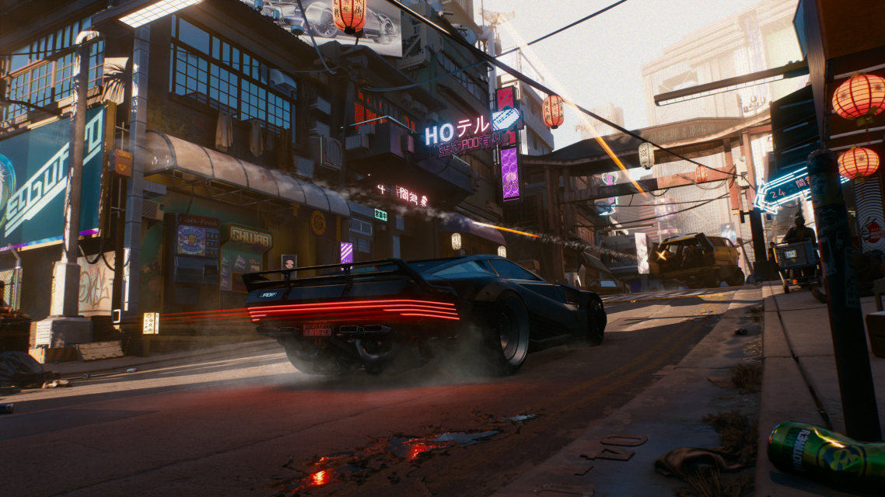
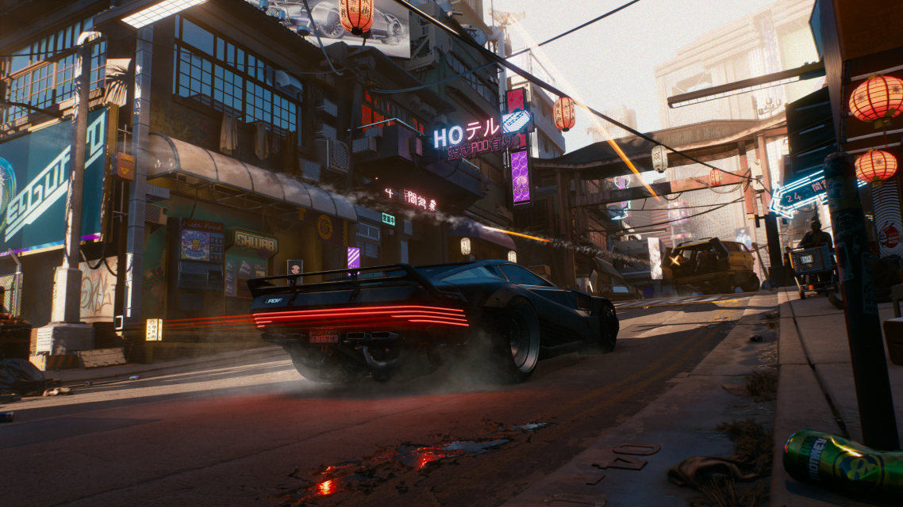

WELCOME TO THE DARK FUTURE
Immerse yourself in the Cyberpunk universe, from the Cyberpunk 2077 story, to the spy mystery expansion Shadows of the Past, and the critically acclaimed animated series Cyberpunk: Edge Walker, where countless stories await to discover in this deadly megacity of Night City.
Classic cyberpunk characters are marginal and aloof loners. They live on the fringes of social groups, in a future permeated with a dystopian atmosphere: daily life is dramatically affected by technological changes, widespread computerized information covers the globe, and invasive body modifications are common.
Cyberpunk characters are typically marginal and aloof loners living on the fringes of society in a dystopian future: everyday life is dramatically affected by rapid technological changes, pervasive computerized information envelops the globe, and invasive body modifications are commonplace.
These characters often have a strong sense of individualism, opposing authority and seeking freedom, unwilling to be bound by societal rules and constraints. They usually possess exceptional technical abilities, adept at using various high-tech devices, including computers, networks, and various body modification technologies. However, despite their powerful abilities, they often cannot escape societal oppression and exploitation. Their lives are filled with hardship and struggle, and they must constantly fight against social injustice, poverty, and crime.
 
